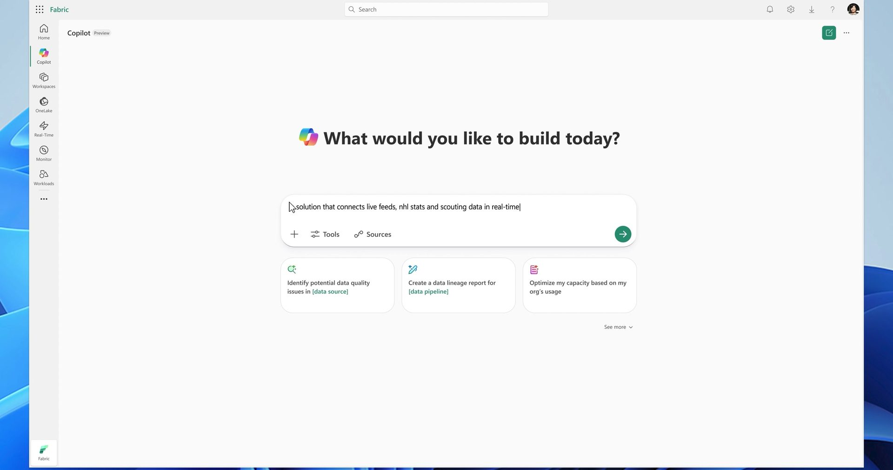
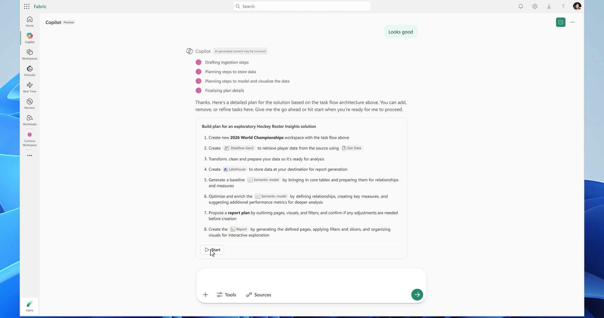
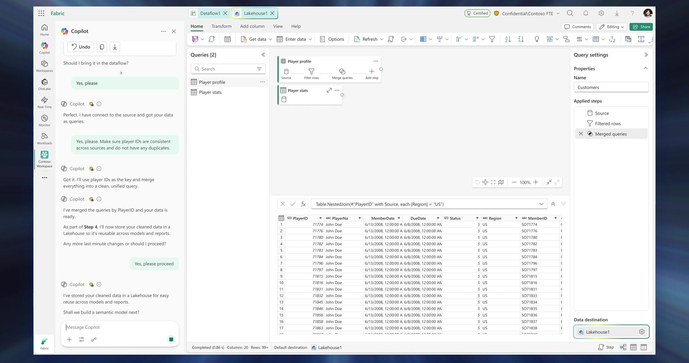

One platform, one studio
Fabric gave developers a home of their own. I built the studio of about 120 people behind it and made the case for one Copilot across the platform.
Two audiences, one foundation
Fabric was built on Power BI's foundation so it could move fast. Design's job was to give developers a real home on it. Three things set the developer side apart: a home page built for people who build, not for people who read reports; an object explorer that shows everything in your solution; and multitasking, so a developer works across several items at once. That separation is still under way.
Designers in the feedback loop
Survey scores told us how people felt, not why, and not what would fix it. People were far more specific on Reddit and with the customers we talked to every week. Fabric was huge, and our researchers had to focus on foundational and generative work, so they couldn't run usability studies on everything or benchmark the whole product. So I put designers in the feedback loop.
What we learned went into semester planning, or straight to the bug list.
Every team set standing office hours with users each week. Users walked us through their problems. Designers asked questions that tested what they were building, plus bigger ones about how people used AI and wrote code. We went to the Reddit community, which was growing fast and very vocal: open questions first, then specific ones. What we learned went into semester planning, or straight to the bug list. And the research team built a user panel of about 3,000 people, so any designer or PM could reach users quickly, and a question became a product change sooner.
Cohesion, audited
We also audited cohesion: whether what shipped matched our design system and patterns. The audits led to programs for filing and fixing UX bugs across the studio, and we classified every bug and tracked the fix rate by severity. None of it was easy. Fabric spanned six large organizations, each with its own culture.
Four signals feed one list of opportunities, aligned across teams and orgs: weekly office hours on every team, the Reddit community, customer conversations (later scaled by the research team's user panel), and cohesion audits. From there, work splits two ways: tactical UX bug fixes, classified by severity with the fix rate tracked, and strategic efforts taken into semester planning with PM and engineering. Both lead to the goal: people succeed with Fabric, and are satisfied.
Unified Copilot
Every team had built its own Copilot in its own corner of Fabric. What people learned in one didn't carry over to the next. Uneven results lowered their trust in all of them. I raised the problem in planning in 2024. My designers did the user research, prototypes and partner work that made one Copilot the platform's top priority. Microsoft announced Unified Copilot in September 2026.
The design is one Copilot that walks you through a whole solution. It has a place to say what you want, a blueprint that holds your intent, and a list of the items it's building. You can watch its progress and steer.






How agents should behave
The last one came from being wrong. I opposed multitasking tabs until Brent pointed out that a Copilot working across several items needs them open in one place, and that tabs show people what the agent is working on. He was right.
- Keep the human in the loop. Agents can act on their own, as long as they make reversibility obvious.
- Let the agent ask how finished you want something before you start to iterate.
- Agents orchestrate the process, not just tasks.
- Agents expose their limits and what they need to reason better.
- Model first, then iterate, then taste. Set the intent up front, work on it together, and let the human set the quality bar.
- The UI is the feedback canvas: it shows people what the agent is working against, so they can trust and steer it.
Other wins along the way
Leaders who don't need me
Brent Sandifer spent years in design ops by choice, building trust between PM and design. I saw that was exactly what a design leader needs and moved him to lead, then manager. He runs the Fabric platform today. Every leader under me can run without me.
Hiring for questions
I don't ask candidates why they made something blue. I ask: pick a decision you showed me; how would you have known it worked? The people who go deepest on that are consistently the ones who succeed. One designer I hired this way is now the lead designer on the Fabric platform.
UX quality programs
We set fix targets by how severe and how important each user experience (UX) bug was. UX bugs became a signal we could manage, not backlog noise.